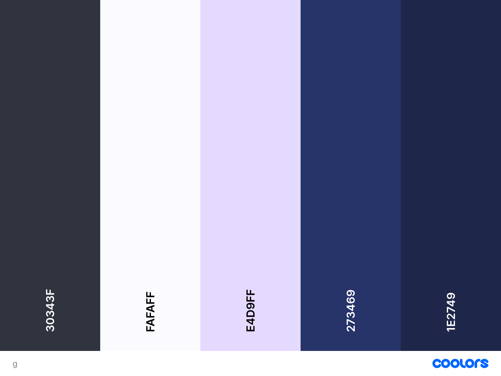

Mixkit sounds - Som de buzina escondido na página principal, tente o encontrar!
A logo foi feita por mim mesmo, utilizando o paint.net! Clique aqui para ir ao site deles.
Estou utilizando bootstrap com a tipografia padrão dele, achei que ela já estava ótima para o site!
A palheta de cor está acessível clicando nesse link, utilizei coolors.co para isso!
Clique aqui para voltar ao site principal.